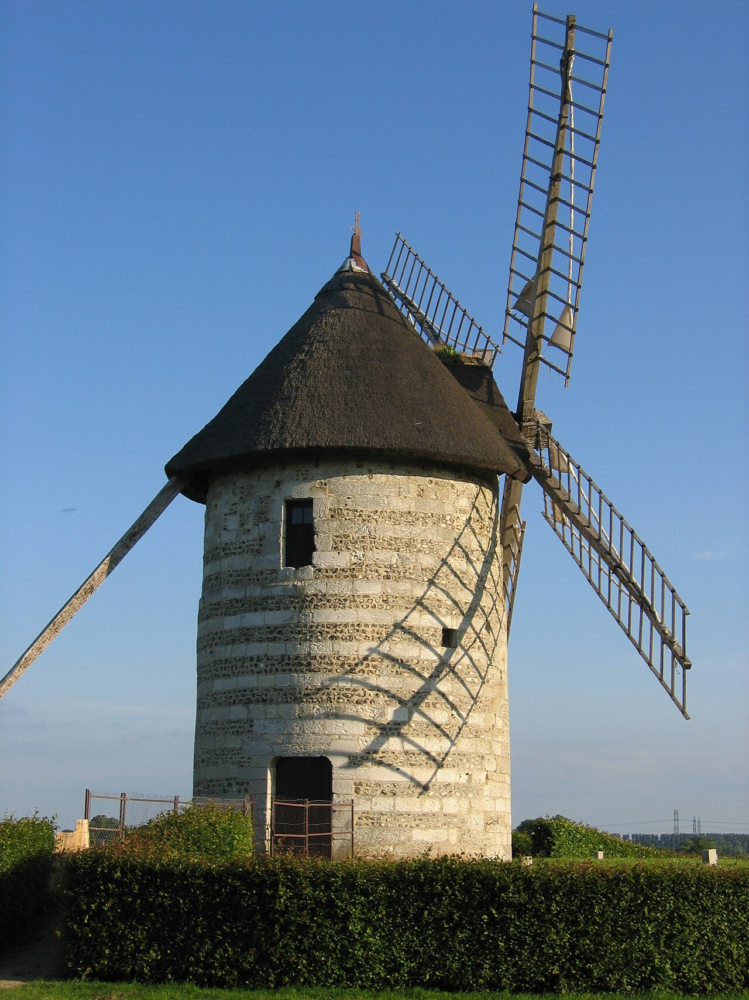

Moulin de pierre de Hauville : entrer dans un moulin à vent médiéval
Dans cette fiche
L’essentiel pour visiter
Sa tour de silex, son toit de roseaux et ses grandes ailes donnent au moulin de Hauville une silhouette immédiatement reconnaissable. Mais l'intérêt de la visite est aussi à l'intérieur : engrenages, meules et monte-sac racontent comment le vent était converti en travail de meunerie. En 2026, la dernière ouverture saisonnière annoncée est le dimanche 25 octobre, de 14 h à 18 h.


HAUVILLE
Un moulin mentionné dès 1258
La première mention du moulin figure dans une charte de l’abbaye de Jumièges, datée de 1258. L’édifice appartient ainsi à une très longue histoire de la meunerie dans le Roumois. Sa tour présente un appareil de silex et de pierres de taille, surmonté d’une couverture de roseaux portée par une charpente de chêne. Cette toiture devait pouvoir s’orienter pour mettre les ailes dans la direction du vent.
Après une longue période de dégradation, une restauration engagée en 1981 s’est poursuivie jusqu’en 1985, avec la remise en marche de mécanismes. La visite actuelle montre ce patrimoine préservé, mais ne doit pas être confondue avec la promesse d’une mouture en activité à chaque séance. L’orientation du toit et la mise en route dépendent aussi des conditions de sécurité et des animations.
Du mouvement des ailes à celui des meules
Dans un moulin à vent, les ailes captent l'énergie de l'air et entraînent un arbre principal. Des engrenages transmettent ensuite cette rotation aux meules chargées d’écraser les grains. Le monte-sac sert à faire circuler la matière entre les niveaux. Ces dispositifs expliquent pourquoi un moulin n’est pas une simple tour : sa hauteur, ses étages et ses transmissions répondent à une chaîne de fabrication.
À Hauville, les visiteurs peuvent découvrir ce système de la cave jusqu’à la girouette, grâce à une lecture des mécanismes et des espaces liés au travail du meunier. Les gestes de réglage des meules et de gestion du grain appartiennent à un métier exigeant, sensible aux changements de vent et à l’entretien des engrenages.
Le musée propose des animations ponctuelles pour les familles et des ateliers adaptés aux groupes ; leur calendrier varie. Les modèles présentés et la présence d’une démonstration doivent être vérifiés avant un déplacement spécialement motivé par la mouture.
Horaires 2026 : la dernière visite de la saison
L'association Roumois Terres Vivantes annonce la saison du 15 mars au 25 octobre 2026, le dimanche de 14 h à 18 h. La communauté de communes confirme une fermeture du moulin au 25 octobre. Le calendrier présenté sur une autre page de l'association comporte des coquilles manifestes, notamment « 18h80 » : mieux vaut privilégier la page d'accueil de la saison et demander confirmation pour un déplacement à la toute fin d'octobre.
L'entrée est de 3 € par adulte, avec gratuité pour les moins de 16 ans. Le Pass’Musées à 9 € est valable dans les sites du réseau selon ses conditions. Le site comprend un espace boutique et une aire de pique-nique en plein air ; le stationnement d'autocars est signalé. Les groupes peuvent réserver visites et ateliers hors de l'ouverture habituelle.
Le moulin lui-même n'est pas accessible aux personnes à mobilité réduite, selon le Réseau des musées de Normandie. Cette restriction tient au bâtiment et à ses niveaux : si une personne de votre groupe ne peut pas emprunter les escaliers, contactez l'association pour savoir quelles possibilités d'accueil extérieur ou de médiation sont envisageables.
Adresse : 2 route du Moulin, 27350 Hauville. Téléphone du moulin : 02 32 56 57 32. Accès en voiture par l'A13, sortie Bourg-Achard, puis direction Routot. Pour une sortie combinée, consultez la Maison du Lin à Routot et le Musée du Sabot à La Haye-de-Routot, sans supposer que les trois lieux partagent le même calendrier.
Association : billetterie et accès · Roumois Seine : fin de saison
Explorer le patrimoine des métiers du Roumois
La Maison du Lin explique la transformation d’une fibre textile, tandis que le Musée du Sabot présente les outils d’un artisan du bois. Le moulin montre un autre usage de l’énergie et de la mécanique dans l’économie rurale. Retrouvez aussi la sélection des musées de Normandie et l'annuaire des musées.